ورشة مشروع تتبع الأجسام والتشفير الفوضوي
Object Tracking Using Chaotic Image Encryption with Face Privacy Mode
شوفي زهراء هذا شرح مفصل
بس مو شرح للقراءة، شرح للتطبيق. المشروع كله ينبني بثماني تجارب، كل وحدة فيها كود جاهز تنسخينه وتشغّلينه، وصورة لشنو المفروض يطلعلك، وشرح قصير ليش، والأخطاء الي راح تصادفك وحلّها. آخر تجربة هي المشروع نفسه شغّال: كاميرا ← تتبع ← تشفير ← إرسال ← فك ← عرض.
كل كود هنا شغّلته أنا بنفسي قبل ما أحطه، والأرقام والصور الي بالصفحة هي مخرجاته الحقيقية مو مرسومة. وين ما تشوفين «شنو المفروض تشوفين» قارني مخرجاتك بيه؛ إذا تطابق، انتقلي للي بعده.
الفكرة بدقيقتين
كاميرا مراقبة تصوّر ناس. برنامج على نفس الجهاز يكشف كل شخص ويعطيه رقماً يلازمه طول الفيديو (هذا «التتبع»). قبل ما يطلع أي فريم من الجهاز، يُشفَّر بخوارزمية مبنية على معادلة فوضوية (معادلة بسيطة جداً لكن نتائجها تبدو عشوائية تماماً وتتغير كلياً لو غيّرتِ المفتاح برقم واحد بعد الفاصلة العاشرة). الطرف الي عنده المفتاح يفك التشفير ويشوف الفيديو مع مربعات التتبع. والي ما عنده المفتاح يشوف ضوضاء.
«وضع خصوصية الوجوه» نسخة ألطف: بدل ما نشفّر الفريم كله، نشفّر مربع الوجه فقط. الموظف على شاشة المراقبة يشوف الناس تتحرك وأرقامها، بس ما يعرف منو هم. ولمّا يصير حادث، الجهة المخوّلة تفك الوجوه بالمفتاح.
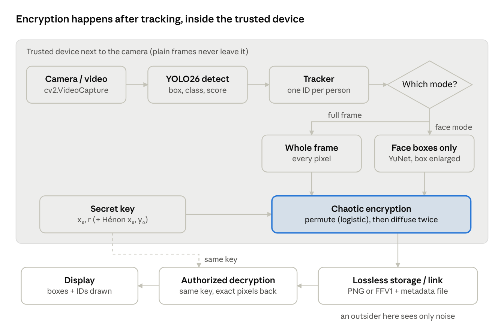
هل المشروع ذكاء اصطناعي؟ جزء واحد بس: الموديل الي يكشف الأشخاص (YOLO) شبكة عصبية جاهزة تنزّلينها وتستخدمينها بثلاثة أسطر، ما تدرّبين شيئاً. الباقي (التتبع، التشفير، الإرسال، القياسات) برمجة ورياضيات عادية، وهو الجزء الي راح تكتبينه بإيدك.
0تجهيز اللابتوب
fyp فيه كل ملفات الكود، وبيئة Python فيها كل المكتبات، وأمر واحد يطبع إصدار OpenCV بدون أخطاء.1. Python
نزّلي Python 3.12 من python.org (Windows installer 64-bit). أهم خطوة: بأول شاشة من المنصّب أشّري على Add python.exe to PATH قبل ما تضغطين Install. بدونها ما راح يعرف الويندوز وين Python.
2. VS Code
نزّلي Visual Studio Code ومن تبويب Extensions (Ctrl+Shift+X) نصّبي إضافة Python من Microsoft.
3. الكود
نزّلي المستودع كملف zip، فكّي الضغط، وانسخي مجلد code إلى C:\fyp (يعني تصير الملفات مثل C:\fyp\chaos.py). المجلد فيه: ملفات التجارب، فيديو اختبار test_video.avi، صورة اختبار photo.jpg، وملفا كاشف الوجوه.
4. البيئة والمكتبات
افتحي مجلد C:\fyp من VS Code (File → Open Folder)، ثم افتحي الطرفية (Terminal → New Terminal) واكتبي:
py -m venv venv
venv\Scripts\activate
pip install -r requirements.txtأول سطر يسوي بيئة معزولة اسمها venv، الثاني يفعّلها (راح يظهر (venv) ببداية السطر)، الثالث ينصّب: ultralytics (YOLO)، opencv-python، numpy، matplotlib، lap (للتتبع)، numba (لتسريع التشفير). يأخذ 5 إلى 10 دقائق.
5. كرت الشاشة (اختياري بس يستاهل)
عندك كرت NVIDIA؟ pip install ultralytics ينصّب نسخة torch تشتغل على المعالج فقط. حتى يشتغل YOLO على الكرت: افتحي pytorch.org/get-started، اختاري Windows → Pip → Python → CUDA (أحدث رقم)، وانسخي الأمر الي يطلع (شكله pip install torch torchvision --index-url https://download.pytorch.org/whl/cu128، والرقم بعد cu يتغير مع الوقت فانسخيه من الموقع). قبلها حدّثي تعريف الكرت من تطبيق NVIDIA App (أو GeForce Experience القديم) أو من موقع NVIDIA. لو الكرت AMD أو Intel اتركي هالخطوة، المعالج يكفي.
6. التأكد
python -c "import cv2, ultralytics, numba, torch; print('OpenCV', cv2.__version__); print('CUDA:', torch.cuda.is_available())"OpenCV 5.0.0 (أو 4.12.0 إذا نسختك أقدم؛ الاثنان يشتغلان مع الكود) CUDA: True (False إذا ما سويتِ خطوة 5، وهذا طبيعي)
- 'python' is not recognized → ما أشّرتِ على Add to PATH. أعيدي تنصيب Python وأشّري عليها، أو استخدمي
pyبدلpython. - running scripts is disabled on this system عند تفعيل venv → اكتبي
Set-ExecutionPolicy -Scope CurrentUser RemoteSignedواضغطي Y، ثم أعيدي الأمر. - لا تنصّبين opencv-python و opencv-contrib-python معاً → يتعاركان. واحدة بس، وهي opencv-python.
- numba ما تنصّبت → غالباً إصدار Python أحدث من الي تدعمه. استخدمي Python 3.12. وإذا ما نفع، شيليها من requirements.txt؛ الكود يشتغل بدونها لكن التشفير يصير أبطأ 8 مرات (التجربة 5 تبيّن الفرق).
- ملاحظة مهمة: كل ما تفتحين VS Code من جديد، شغّلي
venv\Scripts\activateقبل أي شيء.
- Elzero Web School: Learn Python in Arabic #001: إذا Python جديد عليك كلياً. الحلقات الأولى (المتغيرات، القوائم، الحلقات، الدوال) تكفي لهالمشروع.
- OctuCode: تعلم بايثون من الصفر: بديل عربي بفيديو واحد طويل.
- freeCodeCamp: Python for Beginners: بالإنكليزي، إذا تفضّلين مصدراً واحداً مرتّباً.
1اقرأي فيديو بـ OpenCV
# التجربة 1: افتحي فيديو (أو الكاميرا) واعرضي فريماته واحداً واحداً
import cv2
SOURCE = "test_video.avi" # اسم ملف فيديو بجانب هذا الملف، أو اكتبي 0 لكاميرا اللابتوب
cap = cv2.VideoCapture(SOURCE)
if not cap.isOpened():
raise SystemExit("لم أستطع فتح المصدر. تأكدي من اسم الملف أو جربي 1 بدل 0 للكاميرا.")
print("العرض :", int(cap.get(cv2.CAP_PROP_FRAME_WIDTH)))
print("الارتفاع:", int(cap.get(cv2.CAP_PROP_FRAME_HEIGHT)))
print("FPS :", cap.get(cv2.CAP_PROP_FPS))
count = 0
last = None
while True:
ok, frame = cap.read() # frame = مصفوفة أرقام بحجم (ارتفاع، عرض، 3)
if not ok: # انتهى الفيديو أو انقطعت الكاميرا
break
count += 1
last = frame
cv2.putText(frame, f"frame {count}", (10, 30),
cv2.FONT_HERSHEY_SIMPLEX, 1, (0, 0, 255), 2)
cv2.imshow("Lab 1 - press q to quit", frame)
if cv2.waitKey(30) & 0xFF == ord("q"): # 30 ملي ثانية انتظار بين الفريمات
break
cap.release()
cv2.destroyAllWindows()
print("عدد الفريمات التي قرأتها:", count)
if last is not None:
print("شكل الفريم (ارتفاع، عرض، قنوات):", last.shape)
print("قيمة أول بكسل (أزرق، أخضر، أحمر):", last[0, 0])شغّليه من الطرفية: python lab1_video.py. راح تنفتح نافذة تعرض الفيديو مع رقم الفريم. اضغطي q للخروج. غيّري SOURCE إلى 0 وشغّليه مرة ثانية حتى تشوفين كاميرتك.
العرض : 640 الارتفاع: 480 FPS : 24.0 عدد الفريمات التي قرأتها: 120 شكل الفريم (ارتفاع، عرض، قنوات): (480, 640, 3) قيمة أول بكسل (أزرق، أخضر، أحمر): [233 235 233]
الفريم الي رجعته cap.read() مصفوفة NumPy شكلها (480, 640, 3): 480 صف، 640 عمود، و3 أرقام لكل بكسل (أزرق، أخضر، أحمر بهذا الترتيب في OpenCV، مو RGB). كل رقم بين 0 و255 ويحتل بايتاً واحداً، فالفريم الواحد = 480 × 640 × 3 = 921,600 بايت. هذا الرقم راح يرجع بالتجربة 5 لمّا نحسب حجم الفيديو المشفر.
waitKey(30) ينتظر 30 ملي ثانية ويقرأ لوحة المفاتيح؛ بدونه النافذة ما ترسم شيئاً. و& 0xFF حتى تشتغل المقارنة بنفس الشكل على كل الأنظمة.
- لم أستطع فتح المصدر → الملف مو بنفس المجلد، أو الكاميرا مستخدمة من برنامج ثاني، أو رقمها 1 مو 0 (لابتوبات فيها كاميرتان).
- النافذة تعلّق ولا تنغلق → ما وصل الكود إلى
destroyAllWindows(). اضغطي q داخل النافذة (مو بالطرفية)، أو Ctrl+C بالطرفية. - الفيديو سريع جداً أو بطيء → غيّري الرقم داخل waitKey؛ هو بس للعرض وما يؤثر على المعالجة.
- Saeed AlSaeed: كورس OpenCV with Python، المقدمة: سلسلة عربية تبدأ بقراءة الصور والفيديو، وهذا بالضبط الي تحتاجينه الآن.
- Murtaza's Workshop: LEARN OPENCV in 3 HOURS: إنكليزي عملي جداً؛ الفصل الأول (قراءة الصور والفيديو والكاميرا) هو هالتجربة نفسها.
- درس OpenCV: البدء مع الفيديو: الصفحة الرسمية، قصيرة، للرجوع إليها بس.
2التتبع بـ YOLO
# التجربة 2: كشف الأجسام وتتبعها بـ YOLO (كل شخص يأخذ رقماً ثابتاً ID)
import time
import cv2
from ultralytics import YOLO
SOURCE = "test_video.avi" # أو 0 للكاميرا
MODEL = "yolo26n.pt" # n = nano، أصغر وأسرع نسخة. تُنزَّل تلقائياً أول مرة (5 ميغابايت)
DEVICE = "cpu" # اكتبي 0 إذا عندك كرت شاشة NVIDIA وثبّتِ torch بنسخة CUDA
model = YOLO(MODEL)
cap = cv2.VideoCapture(SOURCE)
w, h = int(cap.get(3)), int(cap.get(4))
out = cv2.VideoWriter("tracked.mp4", cv2.VideoWriter_fourcc(*"mp4v"), 24, (w, h))
ids_seen = set()
count = 0
t0 = time.time()
while True:
ok, frame = cap.read()
if not ok:
break
# persist=True يعني: تذكّر الأجسام من الفريم السابق (بدونها تضيع الأرقام)
results = model.track(frame, persist=True, tracker="botsort.yaml",
conf=0.4, device=DEVICE, verbose=False)
r = results[0]
if r.boxes.id is not None: # قد لا يوجد أي جسم في الفريم
for box, tid, cls, conf in zip(r.boxes.xyxy, r.boxes.id, r.boxes.cls, r.boxes.conf):
x1, y1, x2, y2 = [int(v) for v in box] # إحداثيات المربع
ids_seen.add(int(tid))
# هنا تقدرين تعملين أي شيء بالمربع، مثلاً طباعته:
# print(count, model.names[int(cls)], int(tid), x1, y1, x2, y2)
annotated = r.plot() # يرسم المربعات والأرقام جاهزة
out.write(annotated)
cv2.imshow("Lab 2 - press q to quit", annotated)
count += 1
if cv2.waitKey(1) & 0xFF == ord("q"):
break
cap.release()
out.release()
cv2.destroyAllWindows()
seconds = time.time() - t0
print(f"فريمات: {count} | السرعة: {count / seconds:.1f} FPS على {DEVICE}")
print("أرقام التتبع التي ظهرت:", sorted(ids_seen))
print("الفيديو المرسوم محفوظ باسم tracked.mp4")فريمات: 120 | السرعة: 5.7 FPS على cpu ← على لابتوبك أسرع، ومع الكرت أسرع بكثير أرقام التتبع التي ظهرت: [1, 2, 3, 4, 5] الفيديو المرسوم محفوظ باسم tracked.mp4
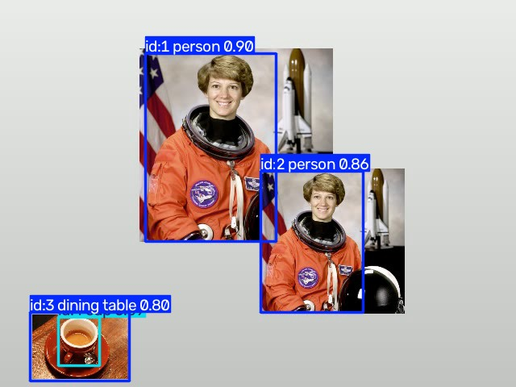
الكشف (detect) يقول «هنا شخص» في كل فريم لوحده، وما يعرف أن شخص الفريم 10 هو نفسه شخص الفريم 11. التتبع (track) يربط المربعات بين الفريمات بالاعتماد على مكان الجسم المتوقع (Kalman filter) ومقدار تداخل المربعات (IoU)، ويعطي كل جسم رقماً. بعض الخوارزميات تضيف «بصمة شكل» الجسم (ReID)؛ DeepSORT تفعل ذلك دائماً، وBoT-SORT في Ultralytics تفعله فقط إذا فعّلتِ with_reid في ملف الإعدادات، وهو مطفأ افتراضياً. لهذا نستخدم model.track مو model.predict، ونمرر persist=True حتى يتذكر الفريم السابق.
الملف يذكر DeepSORT وCSRT وKCF. CSRT وKCF يتتبعان جسماً واحداً بس وتعطينهما المربع بإيدك، فما يناسبان مراقبة عدة أشخاص. BoT-SORT الي بالكود من نفس عائلة DeepSORT (كشف ثم مطابقة مع Kalman filter)، فبالإطار النظري اشرحي DeepSORT وبالعملي استخدمي BoT-SORT واذكري الاسمين. حددي الخوارزمية بنفسك بالاسم (tracker="botsort.yaml") لأن الافتراضية تتغير بين الإصدارات.
YOLO مدرّب على مجموعة COCO (80 نوعاً من الأجسام، منها الشخص والسيارة والفنجان)، لهذا كشف الفنجان والطاولة بدون ما نطلب. بالمشروع راح نحصره بالأشخاص بسطر واحد (classes=[0]) بالتجربة 8.
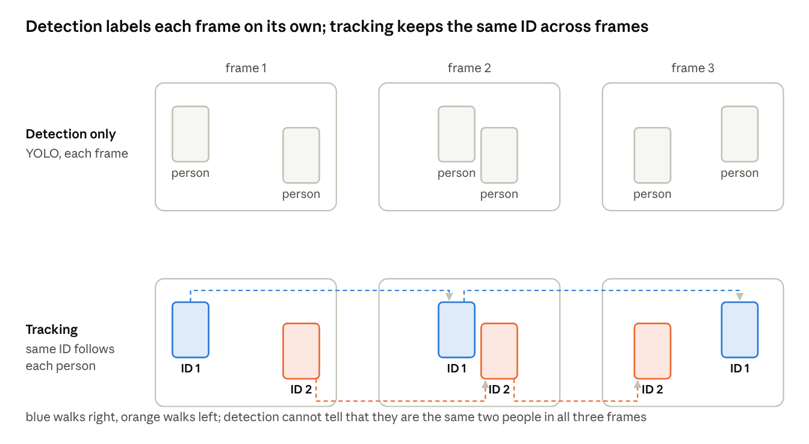
- ModuleNotFoundError: No module named 'lap' →
pip install lap. صار معي بالضبط أول مرة. - أول تشغيل بطيء ويطبع Downloading → ينزّل yolo26n.pt (5 ميغابايت) مرة وحدة. يحتاج إنترنت أول مرة فقط.
- بطيء جداً (أقل من 5 FPS) → خطوة 5 من التجربة 0 ثم
DEVICE = 0. أو صغّري الفريم قبل التتبع:frame = cv2.resize(frame, (640, 360)). - r.boxes.id is None → طبيعي بالفريمات الي ما فيها أي جسم، لهذا الشرط موجود بالكود. لا تشيلينه.
- الأرقام تتبدل بين شخصين لمّا يتقاطعان → هذا اسمه ID switch وهو قياس معروف (التجربة 7 تذكره). جرّبي
tracker="bytetrack.yaml"وقارني، أو انسخي botsort.yaml من مجلد ultralytics وغيّري فيهwith_reid: Trueحتى يستخدم شكل الشخص أيضاً.
- فيديو Ultralytics: التتبع متعدد الأجسام مع YOLO26: يوريك الفرق بين predict وtrack بعرض حي، أقل من 10 دقائق.
- صفحة Ultralytics: التتبع: منها أخذت الحلقة الي بالكود، وفيها جدول الخوارزميات الست.
- Roboflow: ما هو ByteTrack: شرح بالصور كيف تنربط المربعات بين الفريمات.
- Wojke وآخرون: Deep SORT (البحث الأصلي): للإطار النظري بالتقرير فقط، لا تحتاجين تقرأينه كله.
3شوفي الفوضى بعينك
# التجربة 3: شوفي الفوضى بعينك - معادلة logistic وحساسيتها للمفتاح
import numpy as np
import matplotlib.pyplot as plt
def logistic(x0, r, n):
"""ترجع قائمة بـ n قيمة من المعادلة x(n+1) = r * x(n) * (1 - x(n))"""
xs = [x0]
for _ in range(n - 1):
xs.append(r * xs[-1] * (1 - xs[-1]))
return xs
N = 60
fig, ax = plt.subplots(3, 1, figsize=(9, 10))
# (أ) نفس البداية x0 = 0.3 مع ثلاث قيم لـ r: ثابت، دوري، فوضوي
for r, label in [(2.8, "r = 2.8 (settles to one value)"),
(3.2, "r = 3.2 (repeats two values)"),
(3.99, "r = 3.99 (chaos: never repeats)")]:
ax[0].plot(logistic(0.3, r, N), marker=".", label=label)
ax[0].set_title("(a) Same start x0 = 0.3, different r")
ax[0].legend(); ax[0].set_ylim(0, 1)
# (ب) نفس r لكن فرق صغير جداً في البداية: 0.3 و 0.3000001
a = logistic(0.3, 3.99, N)
b = logistic(0.3000001, 3.99, N)
ax[1].plot(a, marker=".", label="x0 = 0.3")
ax[1].plot(b, marker=".", label="x0 = 0.3000001")
ax[1].set_title("(b) r = 3.99, start differs by 0.0000001")
ax[1].legend(); ax[1].set_ylim(0, 1)
diverge = next(i for i in range(N) if abs(a[i] - b[i]) > 0.1)
print(f"السلسلتان تفترقان (فرق > 0.1) عند التكرار رقم {diverge}")
# (ج) توزيع 100 ألف قيمة: الأرقام نفسها غير متساوية التوزيع، لكن البايتات المشتقة منها متساوية
xs = np.array(logistic(0.3, 3.99, 100_000))
bytes_ = (np.floor(xs * 1e8).astype(np.int64) % 256)
ax[2].hist(bytes_, bins=256, color="gray")
ax[2].set_title("(c) Histogram of the 100,000 key bytes floor(x*1e8) mod 256 -> almost flat")
ax[2].set_xlim(0, 255)
plt.tight_layout()
plt.savefig("lab3_logistic.png", dpi=120)
plt.show()
print("الرسم محفوظ باسم lab3_logistic.png")السلسلتان تفترقان (فرق > 0.1) عند التكرار رقم 23 الرسم محفوظ باسم lab3_logistic.png
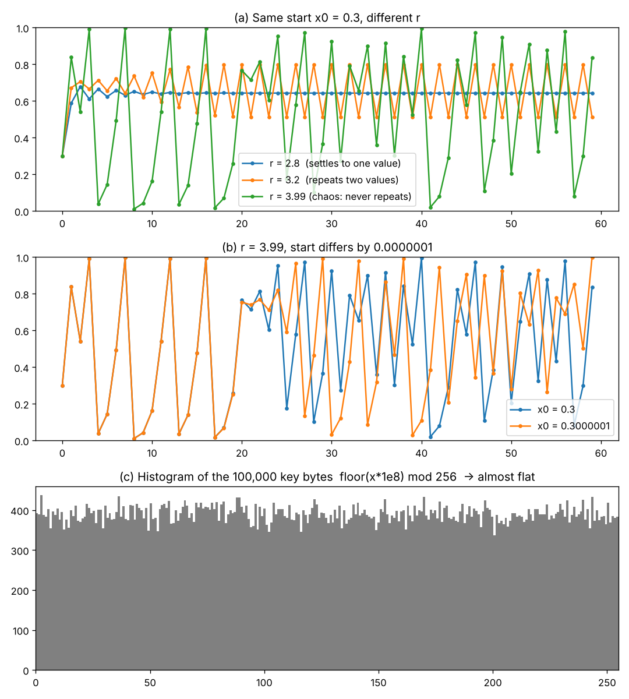
المعادلة أبسط من معادلة الدرجة الثانية، بس لمّا r قريب من 4 تصير النتائج حساسة للبداية لدرجة أن حاسبة تضرب أعداداً بـ 16 خانة عشرية تفقد أي تشابه بعد 20 إلى 50 خطوة. هذا هو «الفوضى»: نظام محدد تماماً (نفس البداية تعطي نفس السلسلة دائماً، وهذا ما يخلي فك التشفير ممكناً) لكن لا يمكن التنبؤ به بدون معرفة البداية بدقة كاملة.
المفتاح عندنا = (x0, r). السلوك فوضوي من r ≈ 3.57، لكن بين 3.57 و4 توجد «نوافذ» صغيرة ترجع فيها الدورية (أشهرها قرب 3.83)، لهذا نحصر r بين 3.99 و4. ونرمي أول 1000 قيمة (skip في chaos.py) حتى لو بدأ مفتاحان متقاربين تفترق سلسلتاهما قبل ما نستخدمها.
الرسم (ج) يجاوب على سؤال مهم بالمناقشة: الأعداد x نفسها مو موزعة بالتساوي (تتجمع قرب 0 و1)، لكن لمّا نأخذ الخانات البعيدة بالتحويل floor(x × 10⁸) mod 256 يصير التوزيع مسطحاً، وهذا الي نحتاجه لمفتاح جيد.
- Veritasium: هذه المعادلة ستغير نظرتك للعالم: أفضل شرح موجود لمعادلة logistic. فعّلي الترجمة التلقائية إلى العربية من إعدادات الفيديو إذا احتجتِ. شاهديه قبل ما تقرأين أي شيء ثاني.
- ويكيبيديا: Logistic map: للتأكد من الأرقام (3.56995، نافذة 3.83) ولصورة bifurcation diagram للتقرير.
- مشروع تخرج من جامعة بابل: Image Encryption using a logistic chaotic system: مشروع عراقي بنفس الفكرة، مفيد تشوفين كيف كتبوا الفصل النظري.
4شفّري صورة وفكّيها
chaos.py)، تشفّرين صورة، تفكّينها، وتتأكدين بالأرقام أنها رجعت بالضبط. وتشوفين بعينك ليش JPG يكسر كل شيء.الملف الأول هو قلب المشروع. اقرأيه مرة بدون ما تفهمين كل سطر، شغّلي التجربة، ثم ارجعي له مع صندوق «ليش؟».
# chaos.py - التشفير الفوضوي للصور (خريطة logistic + بعثرة + انتشار)
# هذا الملف تستخدمه كل التجارب من 4 إلى 8. لا تغيّري فيه شيئاً، فقط استدعيه.
import hashlib
import numpy as np
# تسريع اختياري: إذا كانت مكتبة numba منصّبة تُستخدم تلقائياً (أسرع بنحو 8 مرات، انظري التجربة 5)،
# وإذا لم تكن منصّبة يعمل الكود بشكل طبيعي لكن أبطأ. التجربة 5 تشرح الفرق.
try:
from numba import njit
except ImportError:
def njit(f):
return f
@njit
def logistic_sequence(x0, r, n, skip=1000):
"""تولّد n عدداً بين 0 و1 من معادلة logistic: x(n+1) = r * x(n) * (1 - x(n))
نرمي أول skip عدداً حتى تبتعد السلسلة عن نقطة البداية."""
x = x0
for _ in range(skip):
x = r * x * (1.0 - x)
out = np.empty(n)
for i in range(n):
x = r * x * (1.0 - x)
out[i] = x
return out
@njit
def diffuse(p, k):
"""الانتشار: كل بايت مشفر يعتمد على مفتاحه وعلى البايت المشفر الذي قبله.
c[i] = k[i] XOR ((p[i] + c[i-1]) mod 256)"""
n = p.shape[0]
c = np.empty(n, dtype=np.uint8)
prev = 0
for i in range(n):
v = (int(p[i]) + prev) % 256
c[i] = v ^ int(k[i])
prev = int(c[i])
return c
@njit
def undiffuse(c, k):
"""عكس الانتشار: p[i] = ((c[i] XOR k[i]) - c[i-1]) mod 256"""
n = c.shape[0]
p = np.empty(n, dtype=np.uint8)
prev = 0
for i in range(n):
v = int(c[i]) ^ int(k[i])
p[i] = (v - prev) % 256
prev = int(c[i])
return p
@njit
def diffuse_backward(p, k):
"""نفس الانتشار لكن من آخر بايت إلى أوله.
لماذا جولتان؟ في الجولة الأمامية تغيير بكسل يؤثر فقط على ما بعده. بالجولة الخلفية
يصبح كل بكسل مشفر معتمداً على كل بكسلات الصورة (هذا ما يرفع NPCR إلى 99.6%)."""
n = p.shape[0]
c = np.empty(n, dtype=np.uint8)
prev = 0
for i in range(n - 1, -1, -1):
v = (int(p[i]) + prev) % 256
c[i] = v ^ int(k[i])
prev = int(c[i])
return c
@njit
def undiffuse_backward(c, k):
n = c.shape[0]
p = np.empty(n, dtype=np.uint8)
prev = 0
for i in range(n - 1, -1, -1):
v = int(c[i]) ^ int(k[i])
p[i] = (v - prev) % 256
prev = int(c[i])
return p
def frame_key(master_key, frame_index, extra=0):
"""تشتق مفتاحاً مختلفاً (x0, r) لكل فريم من كلمة السر الرئيسية باستخدام SHA-256.
extra: رقم إضافي (مثل رقم الوجه داخل الفريم) حتى يكون لكل وجه مفتاحه."""
text = f"{master_key}|{frame_index}|{extra}".encode()
h = hashlib.sha256(text).digest() # 32 بايت ثابتة لنفس النص
a = int.from_bytes(h[:8], "big") / 2 ** 64 # عدد بين 0 و1
b = int.from_bytes(h[8:16], "big") / 2 ** 64
x0 = 0.1 + 0.8 * a # نبقيه بين 0.1 و0.9
r = 3.99 + 0.01 * b # نبقيه بين 3.99 و4.0 (منطقة فوضوية)
return x0, r
def _streams(x0, r, n):
"""سلسلة واحدة طويلة بطول 3n: الثلث الأول لترتيب المواقع، والثلثان الآخران مفتاحا بايتات."""
seq = logistic_sequence(x0, r, 3 * n)
perm = np.argsort(seq[:n]) # ترتيب جديد "عشوائي" للمواقع
k = (np.floor(seq[n:] * 1e8).astype(np.int64) % 256).astype(np.uint8)
return perm, k[:n], k[n:]
def encrypt(img, x0, r):
"""تشفّر صورة (أو أي مصفوفة uint8) وترجع مصفوفة بنفس الحجم."""
shape = img.shape
flat = np.ascontiguousarray(img).reshape(-1) # صف واحد طويل من البايتات
perm, k1, k2 = _streams(x0, r, flat.size)
shuffled = flat[perm] # 1) بعثرة المواقع
cipher = diffuse(shuffled, k1) # 2) انتشار أمامي
cipher = diffuse_backward(cipher, k2) # 3) انتشار خلفي
return cipher.reshape(shape)
def decrypt(cipher, x0, r):
"""تعكس الخطوات الثلاث بالترتيب المعاكس."""
shape = cipher.shape
flat = np.ascontiguousarray(cipher).reshape(-1)
perm, k1, k2 = _streams(x0, r, flat.size)
shuffled = undiffuse_backward(flat, k2) # 3) عكس الانتشار الخلفي
shuffled = undiffuse(shuffled, k1) # 2) عكس الانتشار الأمامي
plain = np.empty_like(shuffled)
plain[perm] = shuffled # 1) إرجاع المواقع
return plain.reshape(shape)والملف الثاني يستخدمه:
# التجربة 4: شفّري صورة واحدة، فكّيها، وتأكدي أنها رجعت بالضبط
import time
import numpy as np
import cv2
import matplotlib.pyplot as plt
import chaos # ملف chaos.py بجانب هذا الملف
IMAGE = "photo.jpg" # أي صورة عندك (jpg أو png)
MASTER_KEY = "zahraa-secret-2026" # كلمة السر الرئيسية
img = cv2.imread(IMAGE)
if img is None:
raise SystemExit("لم أجد الصورة، ضعي صورة باسم photo.jpg بجانب هذا الملف")
print("حجم الصورة:", img.shape, "=", img.size, "بايت")
x0, r = chaos.frame_key(MASTER_KEY, 0) # مفتاح الفريم رقم 0
print(f"المفتاح المشتق: x0 = {x0:.15f}, r = {r:.15f}")
t = time.time()
enc = chaos.encrypt(img, x0, r)
print(f"زمن التشفير: {time.time() - t:.3f} ثانية")
t = time.time()
dec = chaos.decrypt(enc, x0, r)
print(f"زمن فك التشفير: {time.time() - t:.3f} ثانية")
print("هل الصورة رجعت بالضبط؟", np.array_equal(img, dec))
# مفتاح خاطئ (فريم رقم 1 بدل 0): يجب أن تطلع ضوضاء
x_wrong, r_wrong = chaos.frame_key(MASTER_KEY, 1)
wrong = chaos.decrypt(enc, x_wrong, r_wrong)
print(f"بمفتاح خاطئ: نسبة البكسلات الصحيحة = {100 * np.mean(wrong == img):.2f}% (المفروض قرب 0.39%)")
# أهم درس عملي: احفظي المشفر بصيغة بدون فقد (PNG) وليس JPG
cv2.imwrite("encrypted.png", enc)
cv2.imwrite("encrypted.jpg", enc)
from_png = chaos.decrypt(cv2.imread("encrypted.png"), x0, r)
from_jpg = chaos.decrypt(cv2.imread("encrypted.jpg"), x0, r)
print("فك من PNG صحيح؟", np.array_equal(img, from_png))
print(f"فك من JPG صحيح؟ {np.array_equal(img, from_jpg)} (نسبة البكسلات الصحيحة {100 * np.mean(from_jpg == img):.2f}%)")
# الرسم: الأصل، المشفر، المفكوك، المفكوك من JPG، وهستوغرام الأصل والمشفر
rgb = lambda a: cv2.cvtColor(a, cv2.COLOR_BGR2RGB)
fig, ax = plt.subplots(2, 3, figsize=(12, 7))
ax[0, 0].imshow(rgb(img)); ax[0, 0].set_title("original")
ax[0, 1].imshow(rgb(enc)); ax[0, 1].set_title("encrypted")
ax[0, 2].imshow(rgb(dec)); ax[0, 2].set_title("decrypted (identical)")
ax[1, 0].imshow(rgb(from_jpg)); ax[1, 0].set_title("decrypted from JPG (broken)")
ax[1, 1].hist(img.ravel(), bins=256, color="gray"); ax[1, 1].set_title("histogram: original")
ax[1, 2].hist(enc.ravel(), bins=256, color="gray"); ax[1, 2].set_title("histogram: encrypted (flat)")
for a in ax.ravel()[:4]:
a.axis("off")
plt.tight_layout()
plt.savefig("lab4_result.png", dpi=110)
plt.show()
print("الرسم محفوظ باسم lab4_result.png")حجم الصورة: (512, 512, 3) = 786432 بايت المفتاح المشتق: x0 = 0.711568362155996, r = 3.995004240285662 زمن التشفير: 1.464 ثانية ← أول نداء يتضمن تجميع numba؛ النداءات التالية أقل من 0.1 ثانية زمن فك التشفير: 0.404 ثانية هل الصورة رجعت بالضبط؟ True بمفتاح خاطئ: نسبة البكسلات الصحيحة = 0.40% (المفروض قرب 0.39%) فك من PNG صحيح؟ True فك من JPG صحيح؟ False (نسبة البكسلات الصحيحة 0.42%)
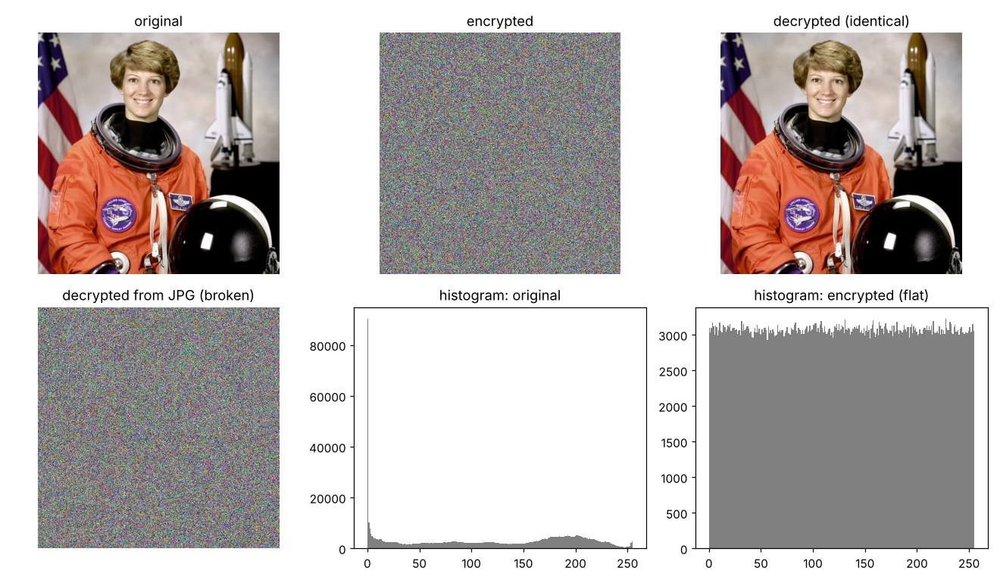
frame_key: بدل ما تختارين x0 وr بإيدك، تكتبين كلمة سر، وSHA-256 يحوّلها إلى 32 بايت تبدو عشوائية، ومنها نشتق x0 بين 0.1 و0.9 وr بين 3.99 و4. نفس الكلمة تعطي نفس المفتاح دائماً (لهذا المستقبل يقدر يفك)، وتغيير حرف واحد يعطي مفتاحاً مختلفاً كلياً. ورقم الفريم داخل النص يعني كل فريم بمفتاحه (التجربة 5 تشرح ليش هذا ضروري).
_streams: نولّد سلسلة فوضوية طولها 3 أضعاف عدد البايتات. الثلث الأول نرتّبه بـ argsort فنحصل على ترتيب جديد «عشوائي» للمواقع (هذا هو مفتاح البعثرة)، والثلثان الآخران يتحولان إلى بايتات مفتاح.
encrypt ثلاث خطوات: (1) بعثرة: ننقل كل بايت إلى موقع جديد حسب الترتيب، فتختفي الأشكال لكن الألوان نفسها باقية (الهستوغرام ما يتغير). (2) انتشار أمامي: كل بايت جديد = مفتاحه XOR (البايت الأصلي + البايت المشفر الي قبله) mod 256، فيصير كل بايت معتمداً على كل الي قبله. (3) انتشار خلفي: نفس الشيء من النهاية للبداية، فيصير كل بايت معتمداً على كل الصورة. decrypt يعكس الثلاث بالترتيب المعاكس.
ليش جولتا انتشار مو وحدة؟ لمّا شغّلت التجربة 7 أول مرة بجولة أمامية فقط طلع NPCR = 7.4% بدل 99.6%، لأن تغيير بكسل واحد يؤثر بس على البكسلات الي بعده بالترتيب. الجولة الخلفية تخلي التغيير يصل لكل بكسل. اذكري هذا بالتقرير كقرار تصميم مع سببه.
JPG: يضغط الصورة بتغيير قيم البكسلات تغييراً بسيطاً لا تلاحظه العين. بالصورة العادية ما يهم؛ بالصورة المشفرة كل بايت متغير يكسر سلسلة الانتشار كلها، فيرجع كل شيء ضوضاء. لهذا الصور المشفرة تُحفظ PNG والفيديو المشفر يُحفظ بترميز بدون فقد (التجربة 5).
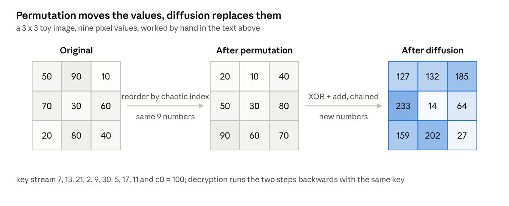
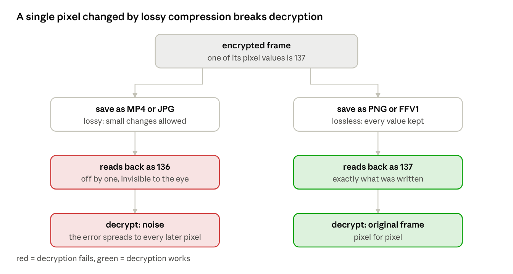
- لم أجد الصورة → ضعي أي صورة باسم
photo.jpgبجانب الملف (المرفقة بالمجلد صورة عامة من ناسا). - رجعت False بعد فك التشفير → تأكدي أنك ما غيّرتِ chaos.py، وأن المفتاح نفسه بالاتجاهين (نفس كلمة السر ونفس رقم الفريم).
- OverflowError أو أرقام غريبة → صار معك لو أضفتِ أرقاماً إلى مصفوفة uint8 مباشرة؛ 250 + 10 يعطي 4 مو 260. لهذا الكود يحوّل إلى int قبل الجمع ثم يأخذ mod 256.
- بطيء → numba مو منصّبة. راح تشوفين الفرق بالأرقام بالتجربة الجاية.
- مقال: ما هو تشفير XOR: ليش XOR بالذات؟ لأن تطبيقه مرتين يرجع الأصل. 5 دقائق.
- boot.dev: شرح One-Time Pad وXOR: الفكرة الأعمق: مفتاح بطول الرسالة يُستخدم مرة وحدة. التشفير الفوضوي يقلّدها بمفتاح قصير يولّد سلسلة طويلة.
- مستودع GitHub: Encryption And Decryption Using Chaotic Key Sequence: كود شخص ثاني بنفس الفكرة بس أبسط (XOR فقط). قارنيه بـ chaos.py حتى تشوفين شنو تضيف البعثرة والانتشار.
- Zhang وآخرون: بحث التشفير الفوضوي للصور: منه أخذت طريقة التحويل floor(x·10⁸) mod 256. للاستشهاد بالتقرير.
5شفّري فيديو كاملاً
# التجربة 5: شفّري فيديو كاملاً (مفتاح مختلف لكل فريم)، احفظيه بدون فقد، ثم فكّيه وقارني
import os
import time
import numpy as np
import cv2
import chaos
SOURCE = "test_video.avi"
MASTER_KEY = "zahraa-secret-2026"
cap = cv2.VideoCapture(SOURCE)
w, h, fps = int(cap.get(3)), int(cap.get(4)), cap.get(cv2.CAP_PROP_FPS) or 24
# FFV1 = ترميز بدون فقد: كل بايت يُحفظ كما هو. لو استخدمنا mp4v أو XVID لانكسر فك التشفير
writer = cv2.VideoWriter("encrypted.avi", cv2.VideoWriter_fourcc(*"FFV1"), fps, (w, h))
if not writer.isOpened():
raise SystemExit("لم يُفتح الملف للكتابة بترميز FFV1. البديل: احفظي كل فريم كـ PNG في مجلد.")
originals = []
t0 = time.time()
i = 0
while True:
ok, frame = cap.read()
if not ok:
break
originals.append(frame)
x0, r = chaos.frame_key(MASTER_KEY, i) # مفتاح جديد لكل فريم من نفس كلمة السر
writer.write(chaos.encrypt(frame, x0, r))
i += 1
cap.release()
writer.release()
enc_time = time.time() - t0
print(f"شُفّر {i} فريم بحجم {w}x{h} في {enc_time:.1f} ثانية = {i / enc_time:.1f} FPS")
# ---- الآن نلعب دور المستقبل: نقرأ الملف المشفر ونفكه ----
cap = cv2.VideoCapture("encrypted.avi")
identical = 0
j = 0
while True:
ok, enc_frame = cap.read()
if not ok:
break
x0, r = chaos.frame_key(MASTER_KEY, j)
dec = chaos.decrypt(enc_frame, x0, r)
if np.array_equal(dec, originals[j]):
identical += 1
if j == 60: # نحفظ صورة للمقارنة
side = np.hstack([originals[j], enc_frame, dec])
cv2.imwrite("lab5_frames.png", side)
j += 1
cap.release()
print(f"فريمات رجعت مطابقة تماماً: {identical} / {j}")
mb = lambda p: os.path.getsize(p) / 1e6
print(f"حجم الأصل {SOURCE}: {mb(SOURCE):.1f} MB | حجم المشفر encrypted.avi: {mb('encrypted.avi'):.1f} MB")
print("المشفر أكبر لأن الضوضاء لا تنضغط. هذا طبيعي واذكريه في التقرير.")شُفّر 120 فريم بحجم 640x480 في 23.2 ثانية = 5.2 FPS ← مع numba، على معالج ضعيف (نواتان) فريمات رجعت مطابقة تماماً: 120 / 120 حجم الأصل test_video.avi: 4.3 MB | حجم المشفر encrypted.avi: 122.4 MB المشفر أكبر لأن الضوضاء لا تنضغط. هذا طبيعي واذكريه في التقرير. (نفس الكود بدون numba:) شُفّر 120 فريم في 186.2 ثانية = 0.6 FPS ← أبطأ 8 مرات
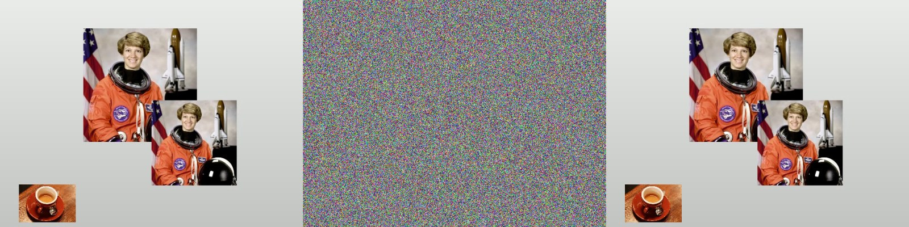
مفتاح لكل فريم: لو استخدمتِ نفس السلسلة لكل الفريمات، فالفريمان المتتاليان متشابهان جداً، ومن يطرحهما من بعض يحصل على فرق الصورتين الأصليتين ويبدأ يكشف الحركة والأشكال بدون مفتاح. SHA-256 مع رقم الفريم يعطي كل فريم سلسلة مستقلة من نفس كلمة السر، والمستقبل يعيد اشتقاقها لأنه يعرف رقم الفريم.
FFV1: ترميز فيديو بدون فقد مدمج بـ OpenCV؛ يحفظ كل بايت كما هو. mp4v وXVID وH.264 كلها مع فقد وتكسر فك التشفير مثل JPG بالتجربة السابقة. الثمن: الحجم. الفريم المشفر 921,600 بايت لا ينضغط لأنه ضوضاء، فـ 120 فريم = 110 ميغابايت خام (والملف طلع 122 مع بيانات الترميز)، أي 28 ضعف الأصل. بالتقرير اكتبي الرقم واقترحي الحلول: وضع الوجوه (تشفير جزء صغير فقط، التجربة الجاية)، أو خفض الدقة، أو ضغط الفريم بدون فقد قبل التشفير.
numba: حلقة Python العادية تنفذ ملايين العمليات لكل فريم ببطء؛ numba تترجم الدالة إلى كود آلة بأول نداء (لهذا أول فريم يأخذ ثانية إضافية). كل الي سويناه حطينا @njit فوق الدوال. الـ GPU ما يفيد هنا لأن الانتشار متسلسل (كل بايت ينتظر الي قبله).
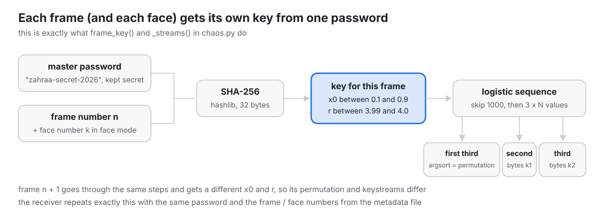
frame_key و_streams في chaos.py.- لم يُفتح الملف للكتابة بترميز FFV1 → نادر مع opencv-python من pip. البديل المضمون: احفظي كل فريم مشفر كـ PNG داخل مجلد (
cv2.imwrite(f"enc/{i:05d}.png", enc)) واقرأيها بالترتيب عند المستقبل. - رجعت 119/120 أو أقل → غالباً كتبتِ الفيديو بترميز مع فقد، أو فتحتِ الملف المشفر ببرنامج عدّله. تأكدي أن fourcc هو FFV1 والامتداد .avi.
- الذاكرة امتلأت → الكود يحفظ كل الفريمات الأصلية بقائمة للمقارنة؛ مع فيديو طويل بدّلي المقارنة بقراءة الأصل مرة ثانية فريماً فريماً.
- مقال dev.to: Lossless vs Lossy: الفرق بين الضغط مع فقد وبدونه بصور ومثال، 5 دقائق.
- Python: hashlib: صفحة SHA-256 الرسمية، للتأكد من السطرين الي بـ frame_key.
- Numba: دليل الخمس دقائق: كل الي تحتاجين تعرفينه عن @njit.
6وضع خصوصية الوجوه
chaos.py، وتخزّنين مواقع المربعات حتى يقدر المخوّل يفكها.ملفا الموديل موجودان بمجلد الكود (face_detection_yunet_2026may.onnx لـ OpenCV 5 و2023mar لـ OpenCV 4، والكود يختار المناسب بنفسه). مصدرهما opencv_zoo على GitHub.
# التجربة 6: وضع خصوصية الوجوه - اكشفي الوجوه وشفّري مربع الوجه فقط
import csv
import cv2
import numpy as np
import chaos
SOURCE = "test_video.avi"
MASTER_KEY = "zahraa-secret-2026"
MARGIN = 0.2 # نكبّر مربع الوجه 20% من كل جهة (الشعر والذقن يكشفان الهوية أيضاً)
# ملفا الموديل موجودان في مجلد الكود (مصدرهما opencv_zoo على GitHub، الرابط في الدليل)
# OpenCV 5 -> face_detection_yunet_2026may.onnx | OpenCV 4 -> face_detection_yunet_2023mar.onnx
MODEL = "face_detection_yunet_2026may.onnx" if cv2.__version__.startswith("5") else "face_detection_yunet_2023mar.onnx"
cap = cv2.VideoCapture(SOURCE)
w, h, fps = int(cap.get(3)), int(cap.get(4)), cap.get(cv2.CAP_PROP_FPS) or 24
detector = cv2.FaceDetectorYN.create(MODEL, "", (w, h), score_threshold=0.6, nms_threshold=0.3, top_k=50)
writer = cv2.VideoWriter("faces_encrypted.avi", cv2.VideoWriter_fourcc(*"FFV1"), fps, (w, h))
meta = open("faces_meta.csv", "w", newline="")
csv_out = csv.writer(meta)
csv_out.writerow(["frame", "face", "x1", "y1", "x2", "y2"]) # المستقبل يحتاج المواقع حتى يفك
frames_with_face = 0
i = 0
while True:
ok, frame = cap.read()
if not ok:
break
detector.setInputSize((w, h))
_, faces = detector.detect(frame) # كل صف: x, y, عرض, ارتفاع, 10 أرقام للملامح, الثقة
if faces is not None:
frames_with_face += 1
for k, f in enumerate(faces):
x, y, fw, fh = f[:4]
# تكبير المربع ثم قصّه حتى لا يخرج عن حدود الصورة
x1 = max(0, int(x - MARGIN * fw)); y1 = max(0, int(y - MARGIN * fh))
x2 = min(w, int(x + fw * (1 + MARGIN))); y2 = min(h, int(y + fh * (1 + MARGIN)))
roi = frame[y1:y2, x1:x2] # قص منطقة الوجه
kx0, kr = chaos.frame_key(MASTER_KEY, i, k) # مفتاح لكل وجه في كل فريم
frame[y1:y2, x1:x2] = chaos.encrypt(roi, kx0, kr) # إرجاع المنطقة مشفرة
csv_out.writerow([i, k, x1, y1, x2, y2])
writer.write(frame)
if i == 60:
cv2.imwrite("lab6_face_mode.png", frame)
cv2.imshow("Lab 6 - faces encrypted (q to quit)", frame)
if cv2.waitKey(1) & 0xFF == ord("q"):
break
i += 1
cap.release(); writer.release(); meta.close(); cv2.destroyAllWindows()
print(f"فريمات فيها وجه مكشوف: {frames_with_face} / {i}")
print("الفيديو: faces_encrypted.avi | مواقع الوجوه: faces_meta.csv")
# ---- فك وجه واحد كتجربة (نفس ما سيفعله الطرف المخوّل) ----
rows = [r for r in csv.DictReader(open("faces_meta.csv")) if r["frame"] == "60"]
cap = cv2.VideoCapture("faces_encrypted.avi"); cap.set(cv2.CAP_PROP_POS_FRAMES, 60); _, f60 = cap.read()
for r in rows:
x1, y1, x2, y2 = int(r["x1"]), int(r["y1"]), int(r["x2"]), int(r["y2"])
kx0, kr = chaos.frame_key(MASTER_KEY, 60, int(r["face"]))
f60[y1:y2, x1:x2] = chaos.decrypt(f60[y1:y2, x1:x2], kx0, kr)
cv2.imwrite("lab6_face_decrypted.png", f60)
print("الفريم 60 بعد فك الوجوه محفوظ باسم lab6_face_decrypted.png")فريمات فيها وجه مكشوف: 120 / 120 الفيديو: faces_encrypted.avi | مواقع الوجوه: faces_meta.csv الفريم 60 بعد فك الوجوه محفوظ باسم lab6_face_decrypted.png
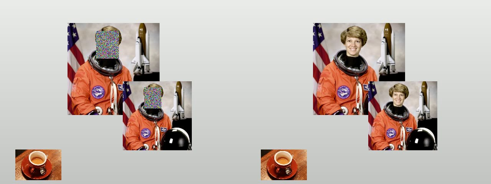
YOLO يكشف الشخص من جسمه كله، فالتتبع يستمر عادياً حتى لو الوجه ضوضاء. هذا الي يخلي الوضع مفيداً: المراقبة شغالة والهوية محمية.
ليش YuNet: Haar Cascade القديم (2001) يعطي كشوفات خاطئة كثيرة ويفشل مع الوجه الجانبي. YuNet موديل صغير (أقل من ربع ميغابايت) مدمج بـ OpenCV، يشتغل على المعالج، ويرجع لكل وجه 15 رقماً: 4 للمربع، 10 لخمس نقاط (العينان، الأنف، طرفا الفم)، وواحد للثقة. «YOLO-face» المذكور بملف الشرح ليس موديلاً رسمياً من Ultralytics، فـ YuNet أضمن وأسهل تبريراً بالتقرير.
التكبير 20%: الكاشف أحياناً يقص الجبهة أو الذقن، والشعر والأذنان يكشفان الهوية أيضاً. القص لحدود الصورة: بدونه ينهار الكود لمّا يكون الوجه قرب الحافة.
ملف CSV: المستقبل ما يعرف وين كانت الوجوه إلا إذا قلتِ له، لهذا نخزّن (رقم الفريم، رقم الوجه، المربع). هذا الملف لا يكشف هوية أحد لكنه يكشف مكان الوجوه، فاذكري بالتقرير أنه يمكن تشفيره أيضاً. ومفتاح لكل وجه (الرقم الثالث في frame_key) حتى لا تُشفَّر وجوه مختلفة بنفس السلسلة.
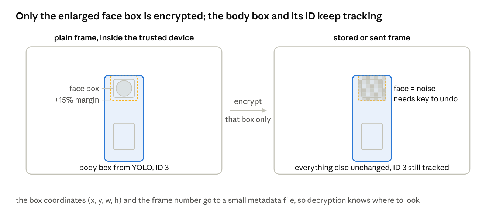
- can't open onnx / FaceDetectorYN error → ملف الموديل مو بنفس المجلد. انسخي الملفين من مجلد code.
- الكاشف يفوّت الوجه ببعض الفريمات (وجه جانبي، إضاءة ضعيفة) → بهالفريمات يطلع الوجه مكشوفاً. هذه أهم نقطة ضعف بالمشروع، وقياسها بالتجربة 7 (نسبة الفريمات المكشوفة). حل عملي: احتفظي بآخر مربع لنفس الشخص لـ 5 فريمات إذا فشل الكشف.
- faces is None → طبيعي بالفريمات بدون وجوه؛ الشرط موجود بالكود.
- الفك يرجع ضوضاء → المربع المستخدم بالفك مو نفس المربع المستخدم بالتشفير بالضبط (بعد التكبير والقص). لهذا نخزّن المربع النهائي بالـ CSV مو مربع الكاشف الأصلي.
- LearnOpenCV: تضبيب الوجوه في الوقت الحقيقي مع YuNet: يسوي بالضبط نصف تجربتك (كشف ثم blur). أنتِ بدّلتِ الـ blur بالتشفير.
- درس OpenCV الرسمي: FaceDetectorYN: شرح الـ 15 رقماً وكود كامل. تجاوزي جزء التعرف على الوجوه (SFace)، مو مطلوب.
- LearnOpenCV: مقارنة كواشف الوجوه: ليش Haar قديم وليش YuNet الخيار الحالي، بصور مقارنة.
7أرقام التقرير
# التجربة 7: الأرقام التي يطلبها التقرير - NPCR, UACI, Entropy, Correlation, حساسية المفتاح, السرعة
import time
import numpy as np
import cv2
import matplotlib.pyplot as plt
import chaos
IMAGE = "photo.jpg"
MASTER_KEY = "zahraa-secret-2026"
img = cv2.imread(IMAGE)
gray = cv2.cvtColor(img, cv2.COLOR_BGR2GRAY) # القياسات تُحسب عادة على صورة رمادية
x0, r = chaos.frame_key(MASTER_KEY, 0)
enc = chaos.encrypt(gray, x0, r)
def entropy(a):
"""كم بت من المعلومات في كل بكسل. الأعلى 8 = لا يمكن التنبؤ بأي شيء."""
hist = np.bincount(a.ravel(), minlength=256) / a.size
hist = hist[hist > 0]
return float(-np.sum(hist * np.log2(hist)))
def correlation(a, direction, n=5000):
"""علاقة كل بكسل بجاره (أفقي/عمودي/قطري). قرب 1 = صورة طبيعية، قرب 0 = مشفرة جيداً."""
rng = np.random.default_rng(0)
H, W = a.shape
ys = rng.integers(0, H - 1, n); xs = rng.integers(0, W - 1, n)
dy, dx = {"horizontal": (0, 1), "vertical": (1, 0), "diagonal": (1, 1)}[direction]
p = a[ys, xs].astype(float); q = a[ys + dy, xs + dx].astype(float)
return float(np.corrcoef(p, q)[0, 1])
def npcr_uaci(c1, c2):
"""NPCR: نسبة البكسلات التي تغيرت. UACI: متوسط حجم التغير. المرجع النظري 99.61% و33.46%."""
npcr = 100 * np.mean(c1 != c2)
uaci = 100 * np.mean(np.abs(c1.astype(int) - c2.astype(int)) / 255)
return npcr, uaci
# 1) تغيير بكسل واحد في الأصل -> كم يتغير المشفر؟ (مقاومة الهجوم التفاضلي)
gray2 = gray.copy()
gray2[10, 10] ^= 1 # نقلب أصغر بت في بكسل واحد
enc2 = chaos.encrypt(gray2, x0, r)
npcr, uaci = npcr_uaci(enc, enc2)
# 2) حساسية المفتاح: فك بمفتاح يختلف بمقدار 10^-10 فقط
wrong = chaos.decrypt(enc, x0 + 1e-10, r)
key_sens = 100 * np.mean(wrong != gray)
# 3) السرعة على فريم ملون 640x480 (مثل الكاميرا)
frame = cv2.resize(img, (640, 480))
chaos.encrypt(frame, x0, r) # أول نداء يجمّع numba، لا نحسبه
t = time.time()
for k in range(30):
chaos.encrypt(frame, *chaos.frame_key(MASTER_KEY, k))
fps = 30 / (time.time() - t)
print("=" * 60)
print(f"{'Metric':34}{'Original':>12}{'Encrypted':>14}")
print("-" * 60)
print(f"{'Entropy (max 8)':34}{entropy(gray):>12.4f}{entropy(enc):>14.4f}")
for d in ("horizontal", "vertical", "diagonal"):
print(f"{'Correlation ' + d:34}{correlation(gray, d):>12.4f}{correlation(enc, d):>14.4f}")
print("-" * 60)
print(f"{'NPCR (one-pixel change)':34}{npcr:>26.4f} % (ideal 99.6094)")
print(f"{'UACI (one-pixel change)':34}{uaci:>26.4f} % (ideal 33.4635)")
print(f"{'Key sensitivity (x0 + 1e-10)':34}{key_sens:>26.4f} % (pixels different)")
print(f"{'Encryption speed 640x480 color':34}{fps:>26.1f} FPS")
print("=" * 60)
# رسم الهستوغرام والارتباط للتقرير
fig, ax = plt.subplots(2, 2, figsize=(10, 7))
ax[0, 0].hist(gray.ravel(), bins=256, color="gray"); ax[0, 0].set_title("Histogram - original")
ax[0, 1].hist(enc.ravel(), bins=256, color="gray"); ax[0, 1].set_title("Histogram - encrypted")
rng = np.random.default_rng(1); ys = rng.integers(0, gray.shape[0] - 1, 3000); xs = rng.integers(0, gray.shape[1] - 1, 3000)
ax[1, 0].scatter(gray[ys, xs], gray[ys, xs + 1], s=2); ax[1, 0].set_title("Adjacent pixels - original")
ax[1, 1].scatter(enc[ys, xs], enc[ys, xs + 1], s=2); ax[1, 1].set_title("Adjacent pixels - encrypted")
plt.tight_layout(); plt.savefig("lab7_metrics.png", dpi=110); plt.show()
print("الرسم محفوظ باسم lab7_metrics.png")============================================================ Metric Original Encrypted ------------------------------------------------------------ Entropy (max 8) 7.4902 7.9992 Correlation horizontal 0.9781 -0.0016 Correlation vertical 0.9856 -0.0228 Correlation diagonal 0.9710 0.0154 ------------------------------------------------------------ NPCR (one-pixel change) 99.9737 % (ideal 99.6094) UACI (one-pixel change) 33.5266 % (ideal 33.4635) Key sensitivity (x0 + 1e-10) 99.6033 % (pixels different) Encryption speed 640x480 color 6.8 FPS ============================================================
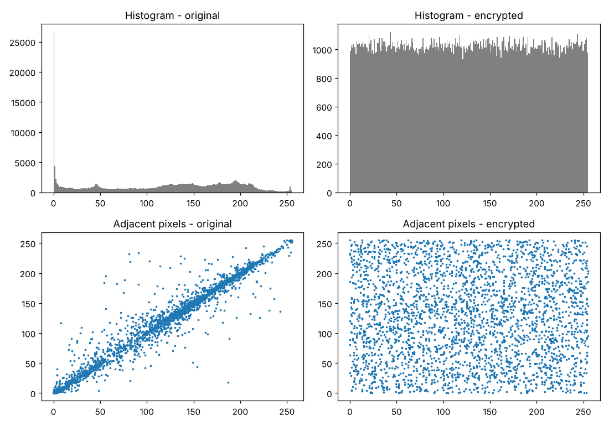
| القياس | معناه | القيمة الجيدة |
|---|---|---|
| Entropy | كم بت معلومات بكل بكسل. 8 يعني كل القيم 0..255 متساوية الاحتمال | أكبر من 7.99 |
| Correlation | هل البكسل يشبه جاره؟ بالصور الطبيعية نعم (قرب 1)، بالمشفر لازم لا (قرب 0) | |r| أقل من 0.05 |
| NPCR | غيّرنا بكسلاً واحداً بالأصل: كم نسبة البكسلات الي تغيرت بالمشفر؟ (مقاومة الهجوم التفاضلي) | قرب 99.61% |
| UACI | نفس التجربة: متوسط حجم التغير | قرب 33.46% |
| Key sensitivity | فك بمفتاح يختلف بـ 10⁻¹⁰: كم نسبة البكسلات الخاطئة؟ | قرب 99.6% |
| FPS | كم فريم تشفّرين بالثانية | حسب جهازك؛ اكتبي مواصفات المعالج جنبه |
ملاحظة صريحة: NPCR عندنا يطلع بين 99.6 و100 حسب موقع البكسل المتغير، لأن الانتشار بالجمع يمرر أي تغيير بشكل مؤكد. القيم المثالية (99.6094 و33.4635) هي ما تعطيه صورتان عشوائيتان مستقلتان. شغّلي التجربة على 5 صور مختلفة واكتبي المتوسط بالتقرير مو رقماً واحداً.
قياسات التتبع: MOTA وIDF1 وHOTA تحتاج بيانات معلّمة يدوياً (ground truth) مثل MOT17. أبسط بديل مقبول لمشروع تخرج: خذي مقطعاً قصيراً (300 فريم)، عدّي بإيدك كم مرة تبدّل رقم شخص (ID switches)، واكتبي FPS للتتبع وحده ومع التشفير. وقياس الخصوصية: نسبة الفريمات الي ظهر فيها وجه بدون تشفير (التجربة 6 تطبع العدد الذي تحتاجينه)؛ هذا قياس مباشر لهدف المشروع.
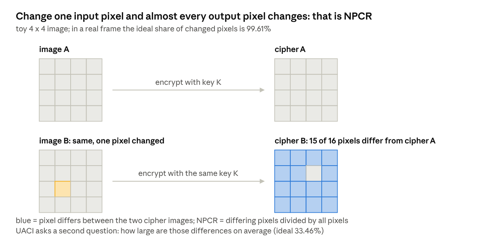
- NPCR قرب 50% أو أقل بكثير → عدّلتِ chaos.py وشلتِ الجولة الخلفية، أو تقارنين صورتين بمفتاحين مختلفين بدل صورتين بنفس المفتاح.
- Entropy أقل من 7.99 → الصورة صغيرة جداً (أقل من 100×100) فالإحصاء غير دقيق. استخدمي صوراً 512×512 أو أكبر.
- FPS متذبذب → شغّلي القياس بعد إغلاق البرامج الثانية، وخذي متوسط 30 فريماً مثل الكود.
- ويكيبيديا: Entropy (information theory): معنى الإنتروبي وصيغتها الي بالكود.
- Li وAlvarez: مسح عن التشفير الفوضوي وتحليله: كيف يُقيَّم التشفير الفوضوي وكيف يُكسر. للاستشهاد ولفهم أسئلة المناقشة.
- مستودع TrackEval على GitHub: إذا قررتِ حساب MOTA/HOTA على MOT17 فعلاً؛ اختياري.
- صفحة MOT17: مجموعة بيانات التتبع المعلّمة، اختياري.
8المرسل والمستقبل (المشروع كاملاً)
sender.py هو الجهاز الموثوق عند الكاميرا: يتتبع ثم يشفّر (الفريم كله أو الوجوه) ويحفظ الفيديو المشفر مع ملف المواقع. receiver.py هو شاشة المراقبة: بدون مفتاح يعرض التتبع فوق ضوضاء، ومع المفتاح يفك ويعرض كل شيء.# التجربة 8 (أ): المرسل - الجهاز الموثوق المتصل بالكاميرا
# يقرأ الفريم -> يتتبع الأشخاص بـ YOLO -> يشفّر (الفريم كله أو الوجوه فقط) -> يحفظ/يرسل
import csv
import time
import cv2
from ultralytics import YOLO
import chaos
SOURCE = "test_video.avi" # أو 0 للكاميرا
MODE = "face" # "full" = تشفير الفريم كله | "face" = تشفير الوجوه فقط
MASTER_KEY = "zahraa-secret-2026"
DEVICE = "cpu" # 0 إذا عندك كرت NVIDIA
MARGIN = 0.2
model = YOLO("yolo26n.pt")
cap = cv2.VideoCapture(SOURCE)
w, h, fps = int(cap.get(3)), int(cap.get(4)), cap.get(cv2.CAP_PROP_FPS) or 24
face_model = "face_detection_yunet_2026may.onnx" if cv2.__version__.startswith("5") else "face_detection_yunet_2023mar.onnx"
faces_det = cv2.FaceDetectorYN.create(face_model, "", (w, h), 0.6, 0.3, 50)
writer = cv2.VideoWriter("stream_encrypted.avi", cv2.VideoWriter_fourcc(*"FFV1"), fps, (w, h))
meta = csv.writer(open("stream_meta.csv", "w", newline=""))
meta.writerow(["frame", "kind", "id", "label", "x1", "y1", "x2", "y2"])
# kind = "track": مربع شخص من YOLO (للعرض فقط) kind = "face": مربع وجه مشفر (يحتاجه فك التشفير)
i = 0
t0 = time.time()
while True:
ok, frame = cap.read()
if not ok:
break
# 1) التتبع يعمل على الفريم الأصلي، قبل أي تشفير
r = model.track(frame, persist=True, tracker="botsort.yaml", conf=0.4,
classes=[0], device=DEVICE, verbose=False)[0] # classes=[0] = أشخاص فقط
if r.boxes.id is not None:
for box, tid in zip(r.boxes.xyxy, r.boxes.id):
x1, y1, x2, y2 = [int(v) for v in box]
meta.writerow([i, "track", int(tid), "person", x1, y1, x2, y2])
# 2) التشفير
if MODE == "full":
x0, rr = chaos.frame_key(MASTER_KEY, i)
frame = chaos.encrypt(frame, x0, rr)
else:
faces_det.setInputSize((w, h))
_, faces = faces_det.detect(frame)
for k, f in enumerate(faces if faces is not None else []):
x, y, fw, fh = f[:4]
x1 = max(0, int(x - MARGIN * fw)); y1 = max(0, int(y - MARGIN * fh))
x2 = min(w, int(x + fw * (1 + MARGIN))); y2 = min(h, int(y + fh * (1 + MARGIN)))
x0, rr = chaos.frame_key(MASTER_KEY, i, k)
frame[y1:y2, x1:x2] = chaos.encrypt(frame[y1:y2, x1:x2], x0, rr)
meta.writerow([i, "face", k, "face", x1, y1, x2, y2])
# 3) "الإرسال": هنا نحفظ في ملف. في مشروع حقيقي يُرسل عبر الشبكة (socket) بنفس البايتات
writer.write(frame)
i += 1
cap.release(); writer.release()
print(f"المرسل: {i} فريم في {time.time() - t0:.1f} ثانية، الوضع = {MODE}")
print("الملفات: stream_encrypted.avi + stream_meta.csv (أرسلي الاثنين للمستقبل، والمفتاح بطريقة آمنة منفصلة)")# التجربة 8 (ب): المستقبل - شاشة المراقبة
# بدون مفتاح: يرى مربعات التتبع لكن الوجوه (أو الفريم كله) تبقى ضوضاء
# مع المفتاح الصحيح: يفك التشفير ويرى كل شيء
import csv
from collections import defaultdict
import cv2
import chaos
MASTER_KEY = "" # اتركيها فارغة = مراقب غير مخوّل | "zahraa-secret-2026" = مخوّل
MODE = "face" # نفس وضع المرسل
boxes = defaultdict(list) # رقم الفريم -> قائمة المربعات
for row in csv.DictReader(open("stream_meta.csv")):
boxes[int(row["frame"])].append(row)
cap = cv2.VideoCapture("stream_encrypted.avi")
w, h, fps = int(cap.get(3)), int(cap.get(4)), cap.get(cv2.CAP_PROP_FPS) or 24
out = cv2.VideoWriter("receiver_view.mp4", cv2.VideoWriter_fourcc(*"mp4v"), fps, (w, h))
i = 0
while True:
ok, frame = cap.read()
if not ok:
break
if MASTER_KEY: # 1) فك التشفير إن وُجد المفتاح
if MODE == "full":
x0, r = chaos.frame_key(MASTER_KEY, i)
frame = chaos.decrypt(frame, x0, r)
else:
for b in boxes[i]:
if b["kind"] == "face":
x1, y1, x2, y2 = int(b["x1"]), int(b["y1"]), int(b["x2"]), int(b["y2"])
x0, r = chaos.frame_key(MASTER_KEY, i, int(b["id"]))
frame[y1:y2, x1:x2] = chaos.decrypt(frame[y1:y2, x1:x2], x0, r)
for b in boxes[i]: # 2) رسم مربعات التتبع فوق الصورة
if b["kind"] == "track":
x1, y1, x2, y2 = int(b["x1"]), int(b["y1"]), int(b["x2"]), int(b["y2"])
cv2.rectangle(frame, (x1, y1), (x2, y2), (255, 120, 0), 2)
cv2.putText(frame, f"id {b['id']}", (x1, max(20, y1 - 6)),
cv2.FONT_HERSHEY_SIMPLEX, 0.7, (255, 120, 0), 2)
status = "AUTHORIZED (decrypted)" if MASTER_KEY else "MONITOR (no key)"
cv2.putText(frame, status, (10, h - 12), cv2.FONT_HERSHEY_SIMPLEX, 0.7, (0, 0, 255), 2)
out.write(frame)
if i == 60:
cv2.imwrite("lab8_receiver_" + ("key" if MASTER_KEY else "nokey") + ".png", frame)
cv2.imshow("Receiver - q to quit", frame)
if cv2.waitKey(1) & 0xFF == ord("q"):
break
i += 1
cap.release(); out.release(); cv2.destroyAllWindows()
print(f"المستقبل عرض {i} فريم كـ {status}. الفيديو: receiver_view.mp4")> python sender.py المرسل: 120 فريم في 28.8 ثانية، الوضع = face الملفات: stream_encrypted.avi + stream_meta.csv (أرسلي الاثنين للمستقبل، والمفتاح بطريقة آمنة منفصلة) > python receiver.py (MASTER_KEY فارغ) المستقبل عرض 120 فريم كـ MONITOR (no key). الفيديو: receiver_view.mp4 > python receiver.py (MASTER_KEY = "zahraa-secret-2026") المستقبل عرض 120 فريم كـ AUTHORIZED (decrypted). الفيديو: receiver_view.mp4
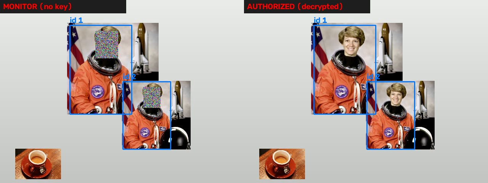
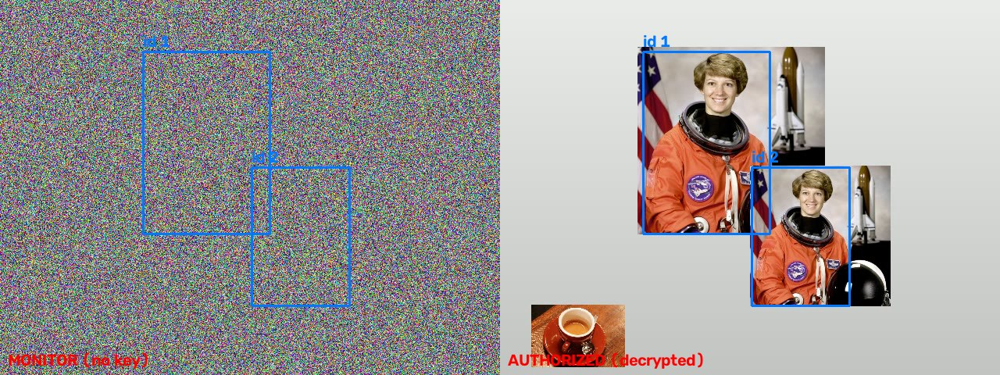
التتبع قبل التشفير، دائماً. YOLO لا يرى شيئاً بصورة مشفرة. لهذا ملف الشرح الأصلي الي يقول «only encrypted frames are processed» خطأ تقنياً؛ الصحيح: «only encrypted frames are stored or transmitted». المعالجة على الجهاز الموثوق، والتشفير قبل الخروج منه.
ملف المواقع (metadata): المستقبل بدون مفتاح يحتاج مربعات التتبع حتى يرسمها، ومع المفتاح يحتاج مربعات الوجوه حتى يفكها. لهذا المرسل يكتب الاثنين بـ CSV. هذه هي «القناة الثانية» الي تنذكر بالأبحاث.
«الإرسال» هنا حفظ بملف. بالعرض النهائي تقدرين تشغّلين المرسل على لابتوب والمستقبل على لابتوب ثاني بنفس الشبكة بنقل الملفين، أو تستبدلين writer.write بإرسال بايتات الفريم عبر socket (وحدة Python مدمجة). الفكرة نفسها: البايتات الي تطلع من المرسل ما تتغير بالطريق.
Project type بالاستمارة: هذا الي يخلي «Practical (Simulation)» هو الاختيار الصحيح: نظام شغّال ببرنامج على حاسبة، بدون قطعة إلكترونية.
- المستقبل يفك ضوضاء رغم المفتاح الصحيح → الوضع (MODE) مختلف بين الملفين، أو ملف CSV من تشغيل قديم. شغّلي المرسل ثم المستقبل مباشرة.
- مربعات التتبع تظهر بمكان خاطئ → غيّرتِ دقة الفريم بين المرسل والمستقبل. المواقع بالبكسل تعتمد على نفس الدقة.
- بطيء (4 FPS) → هذا المعالج الضعيف الي جربت عليه. على لابتوبك مع الكرت، YOLO يصير أسرع بكثير، أما التشفير فيبقى على المعالج (هنا 5 إلى 7 FPS على معالج بنواتين؛ على لابتوب حديث أتوقع أكثر، قيسيها بنفسك بالتجربة 7). لو احتجتِ أسرع: وضع الوجوه يشفّر جزءاً صغيراً من الفريم بس (نحو 2% بفيديو الاختبار)، أو خفّضي الدقة إلى 640×360.
- Roboflow: Track and Count Objects: مثال يبني شيئاً فوق التتبع (عدّ الأشخاص). نفس الأسلوب الي استخدمناه بالمرسل.
- مقال: الفرق بين التعرف والكشف والتتبع: صفحة قصيرة توضح المصطلحات الثلاثة الي راح تُسألين عنها بالمناقشة.
من التجارب إلى التقرير والمناقشة
أين تذهب كل تجربة بالتقرير
| فصل التقرير | مصدره |
|---|---|
| المقدمة ومراجعة الأدبيات | الفكرة بدقيقتين + صندوق «ليش» بالتجارب 2 و3 و4 + النسخة النظرية المطوّلة للتفاصيل |
| تصميم النظام | رسم المسار + التجربة 8 (المرسل/المستقبل) + مخطط وضع الوجوه |
| التنفيذ | chaos.py مشروحاً دالة دالة + التجارب 2 و5 و6 مع الأخطاء الي صادفتك وكيف حلّيتيها (اللجان تحب هذا) |
| النتائج | جدول التجربة 7 على 5 صور + صور التجارب 4 و5 و6 و8 + FPS للوضعين + نسبة الفريمات المكشوفة + حجم الملفات |
| الاستنتاجات والأعمال المستقبلية | قسم «حدود لازم تذكرينها» أدناه |
خطة مقترحة (10 أسابيع)
| الأسبوع | الشغل | الناتج |
|---|---|---|
| 1 | التجارب 0 و1، ومشاهدة فيديوهات Python وOpenCV | بيئة شغالة |
| 2 | التجربة 2 على فيديو الاختبار ثم على كاميرتك | tracked.mp4 من كاميرتك |
| 3 | التجربة 3 + فيديو Veritasium + كتابة صفحتين عن الفوضى | مسودة الإطار النظري |
| 4 و5 | التجربتان 4 و5، وفهم chaos.py سطراً سطراً | تشفير فيديو من كاميرتك |
| 6 | التجربة 6 | وضع الوجوه شغال |
| 7 | التجربة 8 + تجربة الوضعين على 3 فيديوهات مختلفة | النظام كاملاً |
| 8 | التجربة 7 على 5 صور + قياسات التتبع اليدوية | جداول النتائج |
| 9 و10 | كتابة التقرير والعرض، وتجهيز عرض حي بلابتوبين | التسليم |
أسئلة متوقعة بالمناقشة وجوابها بسطرين
- ليش تشفير فوضوي مو AES؟ AES معيار صناعي وأقوى أمنياً، لكن التشفير الفوضوي يشتغل على البكسلات مباشرة بعمليات بسيطة، ويسمح بتشفير جزء من الصورة (الوجه) بسهولة، وهو موضوع بحثي بمعالجة الصور. اذكري بوضوح أن المشروع يدرس هذا الأسلوب ولا يدّعي أنه بديل لـ AES.
- شنو المفتاح وكم حجمه؟ كلمة سر تمر بـ SHA-256 وتعطي x0 وr. الأعداد العشرية بالحاسبة فيها قرابة 15 خانة معنوية، فكل متغير يعطي نحو 10¹⁵ قيمة، والاثنان معاً نحو 10³⁰ ≈ 2¹⁰⁰، وهذا على حافة الحد الأدنى المتعارف عليه بالأبحاث (2¹⁰⁰). حصر r بين 3.99 و4 يقلّله قليلاً. قولي الرقم وقولي إن دقة الأعداد العشرية هي الحد الفعلي للطريقة.
- ليش التتبع قبل التشفير؟ لأن YOLO لا يرى بصورة مشفرة. التشفير يحمي الفريم عند الخزن والإرسال مو أثناء المعالجة.
- شلون تضمنين أن المستقبل يفك بالضبط؟ ترميز بدون فقد (FFV1/PNG) + نفس كلمة السر + رقم الفريم داخل المفتاح. وأثبتُّه بالتجربة 5: 120/120 مطابقة.
- شنو يصير لو فوّت الكاشف وجهاً؟ يظهر مكشوفاً بذلك الفريم. قسته كنسبة وذكرت الحل (الاحتفاظ بآخر مربع لعدة فريمات).
- ليش الفيديو المشفر أكبر؟ الضوضاء لا تنضغط. وضع الوجوه يحل أغلب المشكلة.
- هل المشروع ذكاء اصطناعي؟ كاشف الأشخاص فقط (شبكة عصبية جاهزة). التتبع والتشفير برمجة ورياضيات.
- شنو الفرق بين NPCR وUACI؟ الأول كم بكسل تغير، الثاني كم مقدار التغير. الاثنان يقيسان أثر تغيير بكسل واحد بالأصل.
حدود لازم تذكرينها بنفسك
اللجنة تحترم الطالب الي يعرف حدود شغله أكثر من الي يدّعي الكمال. هذه خمس نقاط اكتبيها بفصل الاستنتاجات قبل ما يسألونك عنها:
- الأمان: الخوارزمية من عائلة البعثرة والانتشار بخريطة logistic، وهناك أبحاث كسرت خوارزميات مشابهة بهجمات النص المختار (chosen-plaintext)، خصوصاً عندما يُستخدم نفس المفتاح لأكثر من صورة. اشتقاق مفتاح لكل فريم يخفف هذا لكنه لا يجعلها بمستوى AES. المصدر: Ma وLi وOu وLi وAlvarez.
- دقة الحاسبة: خريطة logistic بالأعداد العشرية ذات 53 بت تدخل أحياناً بدورات قصيرة، ونوافذ الدورية قرب r = 3.83. حصرنا r بين 3.99 و4 ورمينا أول 1000 قيمة، وهذا تخفيف لا حل جذري. البديل بالأبحاث: خرائط ذات بعدين (Hénon) أو حسابات بأعداد صحيحة.
- كاشف الوجوه: يفوّت الوجه الجانبي والبعيد والمعتم؛ نسبة الفريمات المكشوفة هي القياس الصادق.
- السرعة والحجم: التشفير على المعالج وليس على كرت الشاشة (5 إلى 7 FPS على 640×480 بالمعالج الضعيف الذي جُرّب عليه؛ اكتبي رقم جهازك)، والفيديو المشفر لا ينضغط. مناسب للتخزين والبث بدقة متوسطة، وليس لـ 4K.
- ملف المواقع: غير مشفر بالنسخة الحالية ويكشف أماكن الوجوه (لا الهويات). تشفيره خطوة مستقبلية واضحة.
وملاحظة على الترخيص: Ultralytics YOLO بترخيص AGPL-3.0، مناسب للمشاريع الأكاديمية والمفتوحة؛ الاستخدام التجاري المغلق يحتاج ترخيصاً منهم. جملة واحدة بالتقرير تكفي.
English: terms and ready sentences
The report and the defence are usually in English, so here is the vocabulary used in this guide and a few sentences you can adapt directly. The long bilingual reference version is here if you need full English explanations.
Terms
| Arabic | English | One-line meaning |
|---|---|---|
| كشف الأجسام | Object detection | Finding objects in one frame and drawing a box around each |
| التتبع | Object tracking (MOT) | Keeping the same ID on the same object across frames |
| مربع إحاطة | Bounding box | (x1, y1, x2, y2) of an object |
| الفوضى / خريطة فوضوية | Chaos / chaotic map | A deterministic equation whose output looks random and is extremely sensitive to its start value |
| خريطة logistic | Logistic map | x(n+1) = r·x(n)·(1−x(n)); chaotic for r close to 4 |
| بعثرة | Permutation / confusion | Moving pixels to new positions |
| انتشار | Diffusion | Changing pixel values so one input change spreads everywhere |
| سلسلة المفتاح | Keystream | The bytes generated from the key and XORed with the data |
| اشتقاق مفتاح لكل فريم | Per-frame key derivation | SHA-256(master key, frame index) → (x0, r) |
| ترميز بدون فقد | Lossless codec (FFV1, PNG) | Stores every byte exactly; required for encrypted frames |
| وضع خصوصية الوجوه | Face privacy mode | Encrypt only the (enlarged) face regions |
| كاشف الوجوه YuNet | YuNet face detector | Lightweight CNN built into OpenCV (cv2.FaceDetectorYN) |
| الإنتروبي | Information entropy | Bits of information per pixel; 8 is ideal for cipher images |
| NPCR / UACI | Number of Pixel Change Rate / Unified Average Changing Intensity | Differential-attack resistance; ideals 99.61% and 33.46% |
| حساسية المفتاح | Key sensitivity | A 10⁻¹⁰ change in x0 must give a completely different result |
| تبدّل الهوية | ID switch | The tracker swaps IDs between two people |
Sentences you can adapt
- The system detects and tracks people with a pretrained Ultralytics YOLO26 model using the BoT-SORT tracker, then encrypts each frame, or only the detected face regions, with a logistic-map-based permutation-diffusion cipher before storage or transmission.
- Tracking is performed on the plaintext frame inside the trusted capture device; only encrypted frames are stored or transmitted.
- A distinct key (x0, r) is derived for every frame, and for every face within a frame, by hashing a master secret together with the frame and face indices using SHA-256.
- Encrypted frames are written with the lossless FFV1 codec, since any lossy compression destroys the diffusion chain and makes decryption impossible.
- Decryption was verified bit-exactly: all 120 frames of the test sequence were recovered with zero differing bytes.
- On a 512×512 test image the cipher reached an entropy of 7.999, adjacent-pixel correlations below 0.03, NPCR of 99.6 to 99.9% and UACI of 33.5%, with a key sensitivity of 99.6% for a 10⁻¹⁰ change in x0.
- Face privacy mode encrypts about 2% of the frame area in our tests, which keeps the encrypted stream compressible and leaves tracking unaffected because YOLO detects the body rather than the face.
- The main limitations are the security level of logistic-map ciphers against chosen-plaintext attacks, the finite precision of floating-point chaos, missed face detections, and the incompressibility of fully encrypted video.
كل المصادر
كلها فُتحت وتُحقق منها عند كتابة الدليل. المصادر المبسطة جنب كل تجربة فوق؛ هذه القائمة الكاملة للتقرير.
تعلّم من الصفر
- Elzero Web School: Learn Python in Arabic
- OctuCode: تعلم بايثون من الصفر
- freeCodeCamp: Python for Beginners
- DataCamp: NumPy Tutorial
- Saeed AlSaeed: كورس OpenCV with Python
- aiinarabic: معالجة الصورة باستخدام OpenCV
- Murtaza's Workshop: LEARN OPENCV in 3 HOURS
- freeCodeCamp: OpenCV Course
- PyImageSearch: OpenCV Tutorial
الكشف والتتبع
- Ultralytics: Multi-object tracking with YOLO26 (video)
- Ultralytics docs: Track mode · Detect · Models · COCO dataset
- Ultralytics blog: Meet YOLO26 · مقال Ultralytics بالعربي عن تطور YOLO
- Roboflow: What is ByteTrack · Roboflow: Track and Count Objects
- Wojke et al., Simple Online and Realtime Tracking with a Deep Association Metric (Deep SORT)
- LearnOpenCV: Object Tracking using OpenCV (CSRT/KCF)
- Recognition vs detection vs tracking
- MOT17 · TrackEval
الفوضى والتشفير
- Veritasium: This equation will change how you see the world
- Wikipedia: Logistic map · Hénon map
- What is XOR cipher · boot.dev: One-Time Pad
- Zhang et al., chaotic image encryption (arXiv 1304.2612)
- Li & Alvarez, survey of chaos-based cryptography and cryptanalysis
- Ma, Li & Ou, cryptanalysis of a chaotic image cipher
- مشروع تخرج جامعة بابل: Image Encryption using a logistic chaotic system
- GitHub: Encryption And Decryption Using Chaotic Key Sequence
- Wikipedia: Entropy · Python hashlib · Numba 5-minute guide
الوجوه والفيديو
- opencv_zoo: YuNet model files and README
- OpenCV tutorial: FaceDetectorYN
- LearnOpenCV: face blur with YuNet · LearnOpenCV: face detector comparison
- WIDER FACE dataset paper
- OpenCV: Getting started with videos · Lossless vs lossy
أدوات
- Python for Windows · VS Code · PyTorch install selector
- UN Sustainable Development Goals (لاستمارة المقترح)